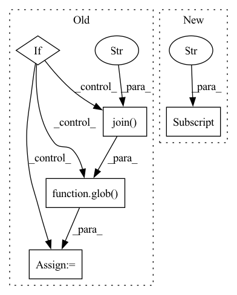

Pattern ID :16294
Before Change
// setup model
loss_record, most_recent_encoder_path = model.learn(dataset_dict, pretrain_epochs, pretrain_batches)
if ppo_finetune and not isinstance(model, algos.RecurrentCPC):
encoder_checkpoint = model.encoder_checkpoints_path
all_checkpoints = glob(os.path.join( encoder_checkpoint, "*" ) )
latest_checkpoint = max(all_checkpoints, key=os.path.getctime)
encoder_feature_extractor_kwargs = {"features_dim": algo_params["representation_dim"],
"encoder_path": os.path.abspath(latest_checkpoint)}
After Change
webdataset = load_ilr_dataset(data_path)
color_space = webdataset.meta["color_space"]
observation_space = webdataset.meta["observation_space"]
action_space = webdataset.meta["action_space"]
assert issubclass(algo, RepresentationLearner)
algo_params = dict(algo_params)
algo_params["augmenter_kwargs"] = {In pattern: SUPERPATTERN
Frequency: 3
Non-data size: 5
Instances Fragment ID: 54515631
Project Name: humancompatibleai/eirli
Commit Name: 47ccff934463fdfcd9a8887bff27286744d1fe17
Time: 2020-11-16
Author: sam@qxcv.net
File Name: src/il_representations/scripts/run_rep_learner.py
M Class Name: AnonimousClass
N Class Name: AnonimousClass
M Method Name: run(11)
N Method Name: run(11)
M Parent Class:
N Parent Class:
M File Name: src/il_representations/scripts/run_rep_learner.py
N File Name: src/il_representations/scripts/run_rep_learner.py
M Start Line: 126
M End Line: 161
N Start Line: 123
N End Line: 165
Before Change
// setup model
loss_record, most_recent_encoder_path = model.learn(dataset_dict, pretrain_epochs, pretrain_batches)
if ppo_finetune and not isinstance(model, algos.RecurrentCPC):
encoder_checkpoint = model.encoder_checkpoints_path
all_checkpoints = glob(os.path.join( encoder_checkpoint, "*" ) )
latest_checkpoint = max(all_checkpoints, key=os.path.getctime)
encoder_feature_extractor_kwargs = {"features_dim": algo_params["representation_dim"],
"encoder_path": os.path.abspath(latest_checkpoint)}
After Change
// setup environment & dataset
webdataset = load_ilr_dataset(data_path)
color_space = webdataset.meta["color_space"]
observation_space = webdataset.meta["observation_space"]
action_space = webdataset.meta["action_space"]
assert issubclass(algo, RepresentationLearner)
algo_params = dict(algo_params) Fragment ID: 54515627
Project Name: humancompatibleai/eirli
Commit Name: 1086682dee2c96d5c039e3190b1fec8ce4c683bd
Time: 2020-11-16
Author: sam@qxcv.net
File Name: src/il_representations/scripts/run_rep_learner.py
M Class Name: AnonimousClass
N Class Name: AnonimousClass
M Method Name: run(11)
N Method Name: run(11)
M Parent Class:
N Parent Class:
M File Name: src/il_representations/scripts/run_rep_learner.py
N File Name: src/il_representations/scripts/run_rep_learner.py
M Start Line: 126
M End Line: 161
N Start Line: 123
N End Line: 165
Before Change
root_path = path
for task, extractor_type, task_dir in cls._TASKS:
task_path = find_path(root_path, osp.join(VocPath.SUBSETS_DIR, task_dir))
if task_path:
root_path = osp.dirname(osp.dirname(task_path))
break
subset_paths = []
for task, extractor_type, task_dir in cls._TASKS:
task_path = osp.join(root_path, VocPath.SUBSETS_DIR, task_dir)
if not osp.isdir(task_path):
continue
task_subsets = [p for p in glob(osp.join( task_path, "*.txt" ) )
if "_" not in osp.basename(p)]
subset_paths += [(task, extractor_type, p) for p in task_subsets]
return subset_paths
After Change
if not root_path:
root_path = osp.dirname(osp.dirname(
osp.dirname(task_subsets[0]["url"] )))
return subsets
Fragment ID: 54515625
Project Name: openvinotoolkit/datumaro
Commit Name: 839ca35beaf8e5f11efcb86d9cfd03c693d8b9bb
Time: 2021-06-09
Author: maxim.zhiltsov@intel.com
File Name: datumaro/plugins/voc_format/importer.py
M Class Name: VocImporter
N Class Name: VocImporter
M Method Name: find_sources(2)
N Method Name: find_sources(2)
M Parent Class: Importer
N Parent Class: Importer
M File Name: datumaro/plugins/voc_format/importer.py
N File Name: datumaro/plugins/voc_format/importer.py
M Start Line: 61
M End Line: 77
N Start Line: 51
N End Line: 75